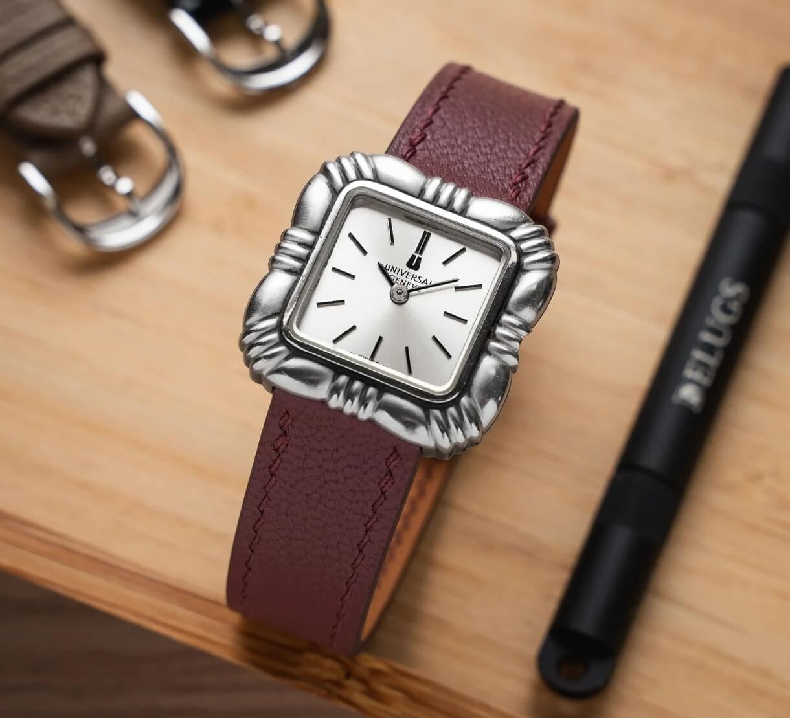
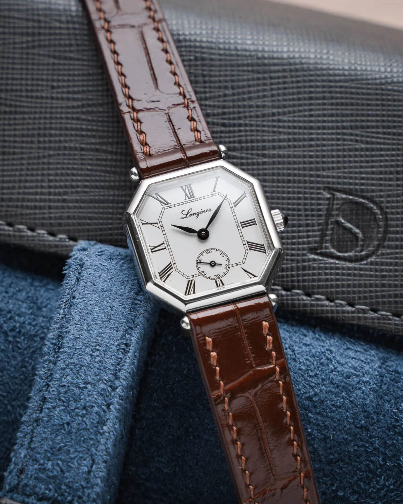
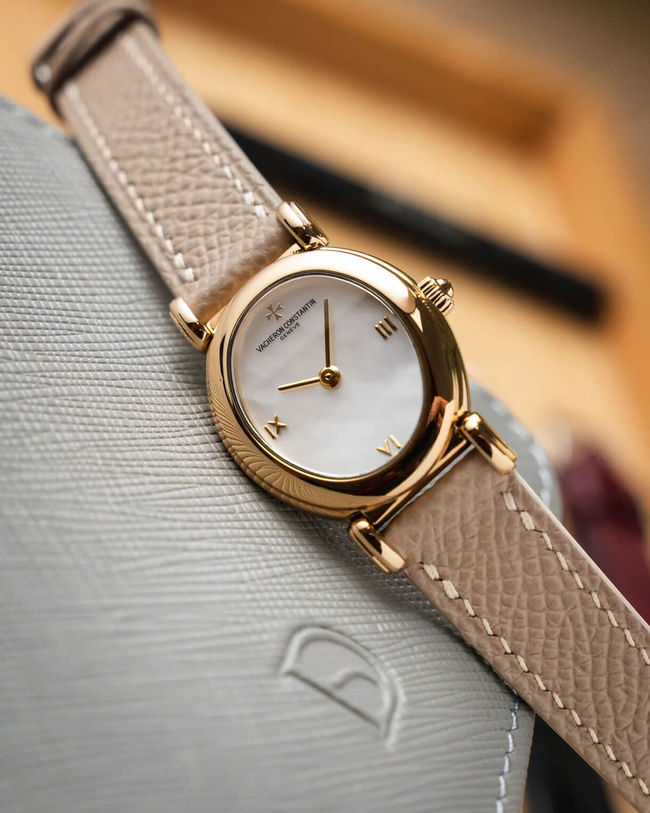
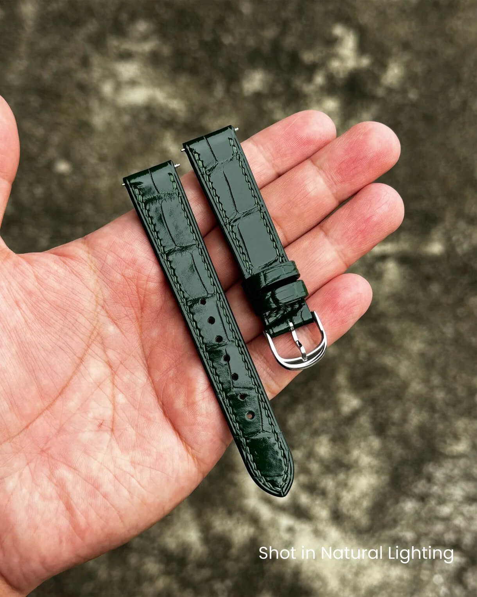

If you own a Tank Must Small or a vintage dress watch, you already know the problem. Good ready-made straps in small widths are hard to find, and anything decent usually means going custom. Delugs just tried to fix that with a ready-made line called the Petite Collection.
Nenad Pantelic • November 24, 2026

The Petite Collection is the Delugs Slim strap, cut down to three smaller widths: 16-14, 14-12 and 12-10 (lug to buckle). It went live on the Delugs site on October 22, 2026, and you can buy it online or pick one up in their boutiques. Delugs says it plainly in the product copy: until now, a good strap for small lugs usually meant going custom.
Quick note before we go further. I haven't handled these yet, so this is news and not a review. All the facts below come from Delugs' own product pages.
The launch has nine straps in three leathers. Five are alligator, two are chevre (goat) and two are Epsom calf. Every one of them is 2.2mm thick, has the Slim profile, and comes with the Delugs Heritage buckle.
If you've spent any time on watch forums, you know the name. The people behind Delugs started out in 2016 as leathercrafters, making straps, belts, wallets, purses and bags. In 2018 they launched Delugs as a strap brand, after noticing how many collectors were wearing nice watches on straps that peeled and cracked after a few months. Today they ship worldwide from Singapore, and the Petite straps are listed with a lifetime warranty and easy returns.
The alligator group is the star of the show. Four of the five are glazed, which means a shiny finish that suits dress watches: Glazed Obsidian, Glazed Cranberry, Glazed Cappuccino and Glazed Malachite. The fifth is Matte Grey Storm, for anyone who wants alligator scales without the shine.

Then there are two chevre straps, Gold and Bordeaux, and two Epsom straps, Cream and Taupe. Chevre has that fine natural grain, and Epsom has the pressed, structured texture you know from Hermès bags. Both are a cheaper way into the collection.
The detail I like the most is the stitching. Delugs matched the thread to each leather. Obsidian gets black thread, Cranberry and Bordeaux get burgundy, Cappuccino gets coffee, Malachite gets dark green, Grey Storm gets dark grey, Gold gets caramel, Cream gets cream and Taupe gets elephant grey. On a strap this narrow, a loud contrast stitch would eat the whole design, so tone-on-tone is the right call.

This is where the collection got the name. On top of the three narrow widths, there's a new XS length for small wrists. Delugs even lists which watches each width is meant for:
| 16-14 | 16mm lugs, e.g. Cartier Tank Must Small, Cartier Tank Louis Small, Rolex Datejust 31 |
| 14-12 | 14mm lugs, e.g. Rolex Lady-Datejust 28, Oyster Perpetual 28, Jaeger-LeCoultre Reverso One |
| 12-10 | Vintage and dress watches with 12mm lugs |
| XS (95/60mm) | Wrists of about 12 to 14.5cm |
| S (105/65mm) | Wrists of about 14.5 to 17cm |
| M (115/70mm) | Wrists of about 16.5 to 19cm |
| Thickness | 2.2mm |
Pro tip: measure your wrist before you pick a length. The S and M sizes overlap between 16.5 and 17cm, so if you sit right there, think about whether you wear your watches snug or loose.
All Petite straps come with the Delugs Heritage buckle, which Delugs describes as a proprietary design that minimises wear on the strap holes and sits slim on the wrist. You pick the finish: Silver, Yellow Gold, Rose Gold or Black. Small dress watches come in gold more often than tool watches do, so having yellow and rose gold buckles in a strap this size is a smart move.

The alligator straps are $205 and the chevre and Epsom straps are $110. Not cheap, but that's exactly what Delugs charges for most of its regular alligator straps and for its regular Slim straps in chevre and Epsom. You don't pay extra for the small size.
As I write this, Delugs has a Black Friday sale with 25% off straps and accessories, and the Petite straps are included. That brings the alligator down to $153.75 and the chevre and Epsom to $82.50. If you have a small watch that has been waiting for a decent strap, this is the week to pull the trigger.
All nine straps are on the Delugs website, and the collection is also available in their boutiques. Delugs ships worldwide from Singapore.
Small-lug watches have been ignored by most strap brands for years, so a ready-made range in 16, 14 and 12mm from a brand this size is good news. I like the matched stitching, and gold buckles in this size make sense for the watches these straps are made for.
Yes, this collection is as niche as it gets, so big congrats to Delugs for investing the time and money to create such an offering.